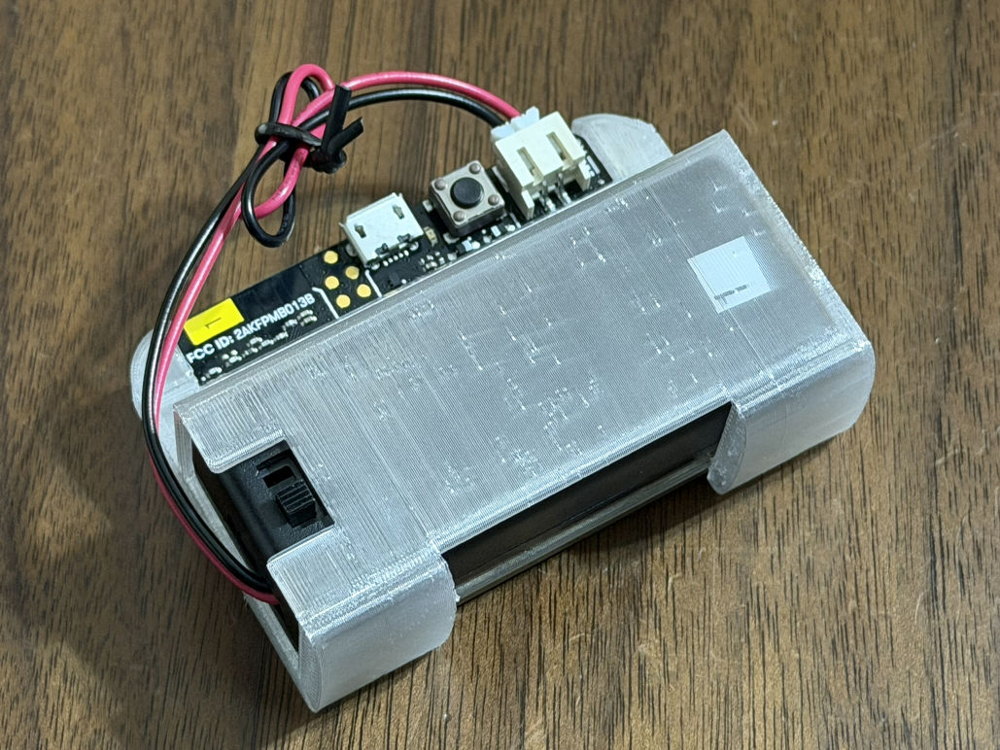
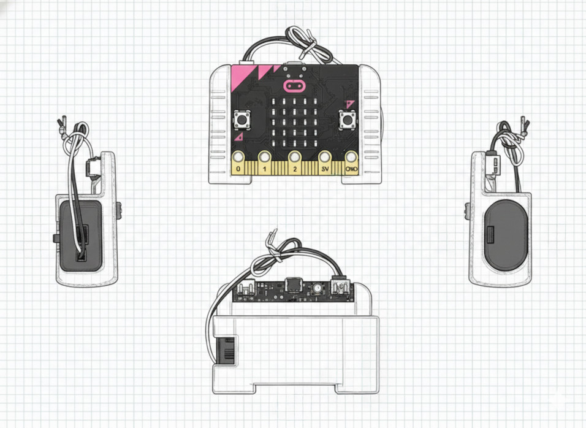

使い方：3D プリント ケース 使い方：3D プリント ケース
この ページでは、ケースの 使い方 と、3D プリントの ヒント を しょうかい します。よくある しつもん は Q&A に あります。 この ページでは、ケースの 使い方 と、3D プリントの ヒント を 紹介 します。よくある 質問 は Q&A に あります。
(1) これ は 何？
micro:bit と 電池ボックス を ひとつに まとめる ケースです。使いやすくなるだけでなく、持ち運びやすくなるので、学習 に ぴったり です。 micro:bit と 電池ボックス を ひとつに まとめる ケースです。使いやすくなるだけでなく、持ち運びやすくなるので、学習 に ぴったり です。
とくちょう： 特徴：
- ボタンが おしやすい ボタンが 押しやすい
- 電池ボックスが ぬけにくい 電池ボックスが 抜けにくい
- コードが からまりにくい コードが 絡まりにくい



(3) 電池ボックス について
この ケースで 使える 電池ボックス は、「 micro:bit 用 電池ボックス （フタ・スイッチ付） 」 です。 この ケースで 使える 電池ボックス は、「 micro:bit 用 電池ボックス （フタ・スイッチ付） 」 です。
(4) おすすめの ざいりょう：TPU（てぃーぴーゆー） (4) おすすめの 材料：TPU（てぃーぴーゆー）
この ケースは TPU で プリント することを おすすめ します。TPU は やわらかく、少し しなる ざいりょう です。 この ケースは TPU で プリント することを おすすめ します。TPU は 柔らかく、少し しなる 材料 です。
理由： 理由：
- TPU は やわらかく しなる ので、micro:bit と 電池ボックス の つけはずし が スムーズです。 TPU は 柔らかく しなる ので、micro:bit と 電池ボックス の 付け外し が スムーズです。
- かたい ざいりょう より、きず が つきにくい です。 固い 材料 より、傷 が つきにくい です。
- ぴったり はまりやすく、ガタガタ しにくい です。 ぴったり はまりやすく、ガタガタ しにくい です。
(5) プリント して じゅんび (5) プリント して 準備
プリント が 終わったら、ささくれ や とがった ところが ないか かくにん します。ケガを しないように、先生 や 大人 と いっしょに さぎょう します。 プリント が 終わったら、ささくれ や とがった ところが ないか 確認 します。ケガを しないように、先生 や 大人 と 一緒に 作業 します。
(6) 組み立て（入れる じゅん） (6) 組み立て（入れる順）
- ケースの パーツを そろえます。 ケースの パーツを 揃えます。
- 電池ボックス を 入れます。 電池ボックス を 入れます。
- micro:bit を 入れます。 micro:bit を 入れます。
- コード（線）が きつく ならないか かくにん します。 コード（線）が きつく ならないか 確認 します。
(7) micro:bit の しゅるい（V1.5 / V2.0） (7) micro:bit の 種類（V1.5 / V2.0）
この ケースは micro:bit V1.5 を もとに 作りました。そのため、micro:bit V2.0 では、もしかしたら ぶつかる ところ（かんしょうといいます）が あるかもしれません。もし V2.0 で ぶつかった 場合は、ごれんらく いただけると たすかります。 この ケースは micro:bit V1.5 を もとに 作りました。そのため、micro:bit V2.0 では、もしかしたら ぶつかる ところ（干渉といいます）が あるかもしれません。もし V2.0 で ぶつかった 場合は、ご連絡 いただけると 助かります。
(8) りよう りょうきん（データ と 3D プリント） (8) 利用料金（データ と 3D プリント）
- 3D データの ダウンロードは むりょう です。 3D データの ダウンロードは 無料 です。
- 3D プリントは、ざいりょうひ や 電気代 などで りょうきんが かかる 場合が あります。 3D プリントは、材料費 や 電気代 などで 料金が かかる 場合が あります。
- 3D プリンターが ない ときは、3D プリント サービス を 使って 作れます。学校 や 図書館 で 使える 場合も あります。 3D プリンターが ない ときは、3D プリント サービス を 使って 作れます。学校 や 図書館 で 使える 場合も あります。
よくある しつもん よくある 質問
- Q1. データの りよう りょうきんは かかりますか。 Q1. データの 利用料金は かかりますか。
- A. いいえ。ダウンロードは むりょう です。 A. いいえ。ダウンロードは 無料 です。
- Q2. プリントして 送って くれますか。 Q2. プリントして 送って くれますか。
- A. いいえ。ここでは 3D データを 配ります。プリントは 自分で します。 A. いいえ。ここでは 3D データを 配ります。プリントは 自分で します。
- Q3. 3D プリンタが ない ときは どうしますか。 Q3. 3D プリンタが ない ときは どうしますか。
- A. 3D プリント サービス を 使って 作ることが できます。学校 や 図書館 で 使える 場合も あります。 A. 3D プリント サービス を 使って 作ることが できます。学校 や 図書館 で 使える 場合も あります。
- Q4. この ケースで 使える 電池ボックス は 何ですか。 Q4. この ケースで 使える 電池ボックス は 何ですか。
- A. 「micro:bit 用 電池ボックス（フタ・スイッチ付）」です。 A. 「micro:bit 用 電池ボックス（フタ・スイッチ付）」です。
- Q5. なぜ TPU を おすすめ するのですか。 Q5. なぜ TPU を おすすめ するのですか。
- A. TPU は やわらかく しなる ので、micro:bit と 電池ボックス の つけはずし が スムーズ に なるからです。 A. TPU は 柔らかく しなる ので、micro:bit と 電池ボックス の 付け外し が スムーズ に なるからです。
- Q6. かたい ざいりょう（PLA など）でも 作れますか。 Q6. 固い 材料（PLA など）でも 作れますか。
- A. はい、作れます。ただし、きつい ときは いれにくい ことが あります。 A. はい、作れます。ただし、きつい ときは 入れにくい ことが あります。
- Q7. micro:bit V2.0 でも 使えますか。 Q7. micro:bit V2.0 でも 使えますか。
- A. この ケースは V1.5 を もとに 作りました。V2.0 では ぶつかる ところが あるかもしれません。もし ぶつかった 場合は、ごれんらく いただけると たすかります。 A. この ケースは V1.5 を もとに 作りました。V2.0 では ぶつかる ところが あるかもしれません。もし ぶつかった 場合は、ご連絡 いただけると 助かります。
- Q8. いくつでも 作れますか。 Q8. いくつでも 作れますか。
- A. すきなだけ 作れます（ライセンス の ルールは 守ってください）。 A. 好きなだけ 作れます（ライセンス の ルールは 守ってください）。
- Q9. あぶなく ないですか。 Q9. 危なく ないですか。
- A. プリントの あとは とがっている ことが あります。先生 や 大人 と いっしょに 使ってください。 A. プリントの 後は とがっている ことが あります。先生 や 大人 と 一緒に 使ってください。
本情報の内容（添付文書、リンク先などを含む）は、作成日時点でのものであり、予告なく変更される場合があります。